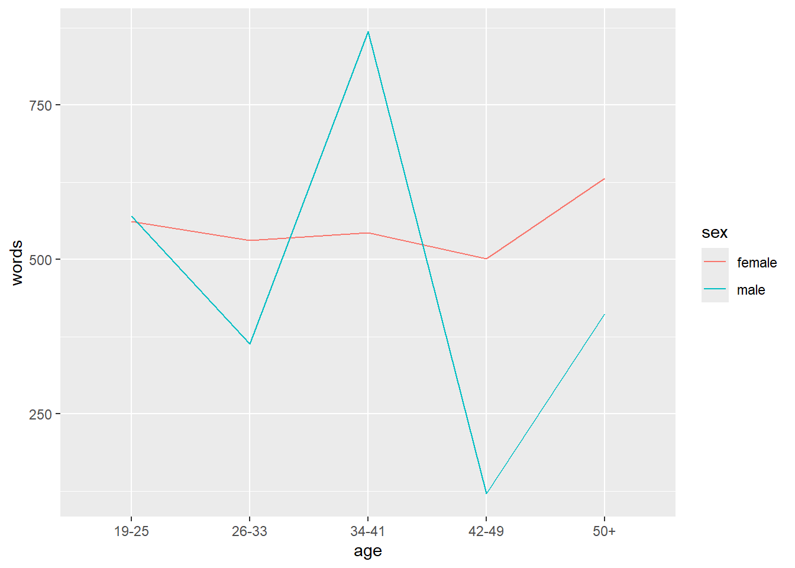
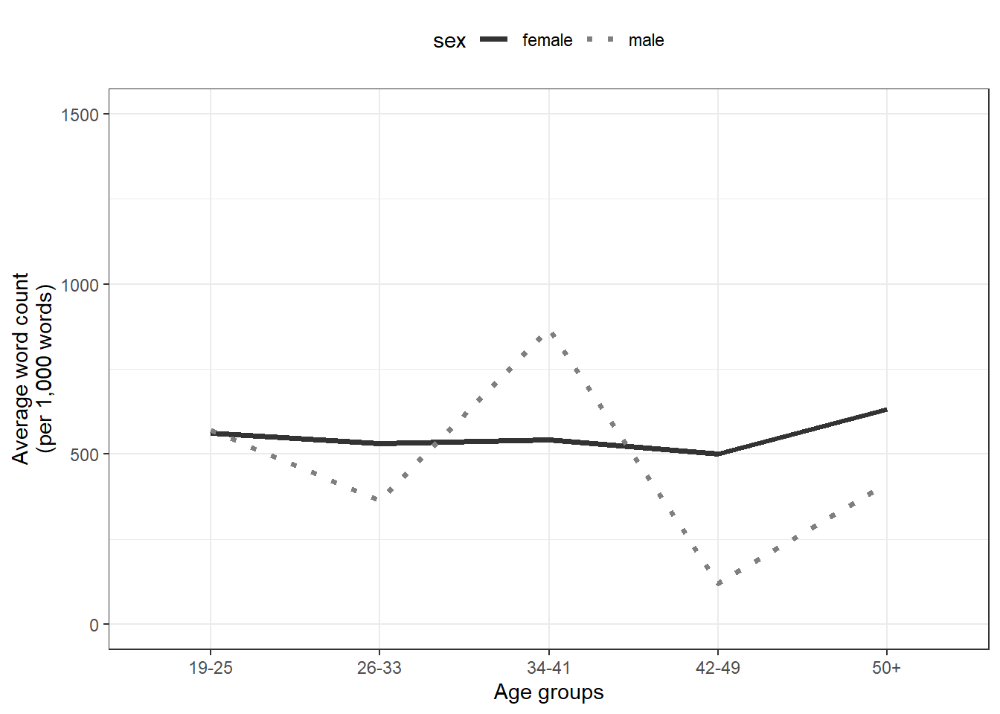

Section 2 Introduction to R
UNFINISHED! WORK IN PROGRESS! I’M STILL WORKING ON THE CONTENT
Here I want to show you how to get started with R. As such, this section is aimed at fresh users or beginners with the aim of showcasing how to set up a R session in RStudio, how to set up R projects, and how to do basic operations using R such as loading and manipulation tabular data and generating basic visualization using R.
Here is an overview of cheat sheets for popular and frequently used packages provided by RStudio (cheat sheets are short overviews with explanations and examples of useful functions). If you already have experience with R, both @wickham2016r (see here) and @gillespie2016efficient (see here) are highly recommendable and excellent resources for improving your coding abilities and workflows in R.
2.1 Installing R and RStudio
You have NOT yet installed R on your computer?
You have NOT yet installed RStudio on your computer?
- Click here for downloading and installing RStudio.
You can find a more elaborate explanation of how to download and install R and RStudio here that was created by the UQ library.
2.2 Preparation
Before you actually open R or RStudio, there things to consider that make working in R much easier and give your workflow a better structure.
Imagine it like this: when you want to write a book, you could simply take pen and paper and start writing or you could think about what you want to write about, what different chapters your book would consist of, which chapters to write first, what these chapters will deal with, etc. The same is true for R: you could simply open R and start writing code or you can prepare you session and structure what you will be doing.
2.2.1 Before you start working with R/RStudio (Folder Structure and R projects)
Before actually starting with writing code, you should prepare the session by going through the following steps:
2.2.1.1 1. Create a folder for your project
In that folder, create the following sub-folders (you can, of course, adapt this folder template to match your needs)
- data (you do not create this folder for the present workshop as you can simply use the data folder that you downloaded for this workshop instead)
- images
- tables
- docs
The folder for your project could look like the the one shown below.

Once you have created your project folder, you can go ahead with RStudio.
2.2.1.2 2. Open RStudio
This is what RStudio looks like when you first open it:

In RStudio, click on File

You can use the drop-down menu to create a R project
2.2.1.3 3. R Projects
In RStudio, click on New Project

Next, confirm by clicking OK and select Existing Directory.
Then, navigate to where you have just created the project folder for this workshop.

Once you click on Open, you have created a new R project
2.2.1.4 4. R Notebooks
In this project, click on File
Click on New File and then on R Notebook as shown below.

This R Notebook will be the file in which you do all your work.
2.2.1.5 5. Updating R
In case you encounter issues when opening the R Notebook (e.g., if you receive an error message saying that you need to update packages which then do not install properly), you may have to update your R version.
To update your current R version to the recent release please copy the code chunk shown below into the console pane (the bottom left pane) and click on Enter to run the code. The code will automatically update your version of R to the most recent release. During the update, you may be asked to specify some options - in that case, you can simply click on Accept and Next and accept the default settings.
2.2.1.6 6. Optimizing R project options
When you work with projects, it is recommendable to control the so-called environment. This means that you make your R Project self-contained by storing all packages that are used in project in a library in the R Project (instead of in the general R library on your computer). Having a library in your R Project means that you can share your project folder wit other people and they will automatically have the same package versions that you have sued which makes your code more robust and reproducible.
So, how to create such an environment? You simply click on Tools (at the very top right of RStudio), then click onProject Options then click on Environments and then check Use renv with this project. Now, when you install packages, they will be installed in the package library (rather than the general R library on your computer).
2.2.1.7 7. Getting started with R Notebooks
You can now start writing in this R Notebook. For instance, you could start by changing the title of the R Notebook and describe what you are doing (what this Notebook contains).
Below is a picture of what this document looked like when I started writing it.

When you write in the R Notebook, you use what is called R Markdown which is explained below.
2.2.1.8 R Markdown
The Notebook is an R Markdown document: a Rmd (R Markdown) file is more than a flat text document: it’s a program that you can run in R and which allows you to combine prose and code, so readers can see the technical aspects of your work while reading about their interpretive significance.
You can get a nice and short overview of the formatting options in R Markdown (Rmd) files here.
R Markdown allows you to make your research fully transparent and reproducible! If a couple of years down the line another researcher or a journal editor asked you how you have done your analysis, you can simply send them the Notebook or even the entire R-project folder.
As such, Rmd files are a type of document that allows to
include snippets of code (and any outputs such as tables or graphs) in plain text while
encoding the structure of your document by using simple typographical symbols to encode formatting (rather than HTML tags or format types such as Main header or Header level 1 in Word).
Markdown is really quite simple to learn and these resources may help:
The Markdown Wikipedia page includes a very handy chart of the syntax.
John Gruber developed Markdown and his introduction to the syntax is worth browsing.
This interactive Markdown tutorial will teach you the syntax in a few minutes.
2.3 R and RStudio Basics
RStudio is a so-called IDE - Integrated Development Environment. The interface provides easy access to R. The advantage of this application is that R programs and files as well as a project directory can be managed easily. The environment is capable of editing and running program code, viewing outputs and rendering graphics. Furthermore, it is possible to view variables and data objects of an R-script directly in the interface.
2.3.1 RStudio: Panes
The GUI - Graphical User Interface - that RStudio provides divides the screen into four areas that are called panes:
- File editor
- Environment variables
- R console
- Management panes (File browser, plots, help display and R packages).
The two most important are the R console (bottom left) and the File editor (or Script in the top left). The Environment variables and Management panes are on the right of the screen and they contain:
- Environment (top): Lists all currently defined objects and data sets
- History (top): Lists all commands recently used or associated with a project
- Plots (bottom): Graphical output goes here
- Help (bottom): Find help for R packages and functions. Don’t forget you can type
?before a function name in the console to get info in the Help section. - Files (bottom): Shows the files available to you in your working directory
These RStudio panes are shown below.

2.3.1.1 R Console (bottom left pane)
The console pane allows you to quickly and immediately execute R code. You can experiment with functions here, or quickly print data for viewing.
Type next to the > and press Enter to execute.
EXERCISE TIME!
`
Here, the plus sign is the operator. Operators are symbols that represent some sort of action. However, R is, of course, much more than a simple calculator. To use R more fully, we need to understand objects, functions, and indexing - which we will learn about as we go.
For now, think of objects as nouns and functions as verbs.
2.3.1.2 Running commands from a script
To run code from a script, insert your cursor on a line with a command, and press CTRL/CMD+Enter.
Or highlight some code to only run certain sections of the command, then press CTRL/CMD+Enter to run.
Alternatively, use the Run button at the top of the pane to execute the current line or selection (see below).

2.3.1.3 Script Editor (top left pane)
In contrast to the R console, which quickly runs code, the Script Editor (in the top left) does not automatically execute code. The Script Editor allows you to save the code essential to your analysis. You can re-use that code in the moment, refer back to it later, or publish it for replication.
Now, that we have explored RStudio, we are ready to get started with R!
2.4 Getting started with R
This section introduces some basic concepts and procedures that help optimize your workflow in R.
2.4.1 Setting up an R session
At the beginning of a session, it is common practice to define some basic parameters. This is not required or even necessary, but it may just help further down the line. This session preparation may include specifying options. In the present case, we
want R to show numbers as numbers up to 100 decimal points (and not show them in mathematical notation (in mathematical notation, 0.007 would be represented as 0.7e-3))
want R to show maximally 100 results (otherwise, it can happen that R prints out pages-after-pages of some numbers).
Again, the session preparation is not required or necessary but it can help avoid errors.
In script editor pane of RStudio, this would look like this:

2.4.2 Packages
When using R, most of the functions are not loaded or even installing automatically. Instead, most functions are in contained in what are called packages.
R comes with about 30 packages (“base R”). There are over 10,000 user-contributed packages; you can discover these packages online. A prevalent collection of packages is the Tidyverse, which includes ggplot2, a package for making graphics.
Before being able to use a package, we need to install the package (using the install.packages function) and load the package (using the library function). However, a package only needs to be installed once(!) and can then simply be loaded. When you install a package, this will likely install several other packages it depends on. You should have already installed tidyverse before the workshop.
You must load the package in any new R session where you want to use that package. Below I show what you need to type when you want to install the tidyverse, the tidytext, the quanteda, the readxl, and the tm packages (which are the packages that we will need in this workshop).
install.packages("tidyverse")
install.packages("tidytext")
install.packages("quanteda")
install.packages("readxl")
install.packages("tm")
install.packages("tokenizers")
install.packages("here")
install.packages("flextable")
# install klippy for copy-to-clipboard button in code chunks
install.packages("remotes")
remotes::install_github("rlesur/klippy")To load these packages, use the library function which takes the package name as its main argument.
library(tidyverse)
library(tidytext)
library(quanteda)
library(readxl)
library(tm)
library(tokenizers)
library(here)
library(flextable)
# activate klippy for copy-to-clipboard button
klippy::klippy()The session preparation section of your Rmd file will thus also state which packages a script relies on.
In script editor pane of RStudio, the code blocks that install and activate packages would look like this:

2.4.3 Getting help
When working with R, you will encounter issues and face challenges. A very good thing about R is that it provides various ways to get help or find information about the issues you face.
2.4.3.1 Finding help within R
To get help regrading what functions a package contains, which arguments a function takes or to get information about how to use a function, you can use the help function or the apropos. function or you can simply type a ? before the package or two ?? if this does not give you any answers.
There are also other “official” help resources from R/RStudio.
Read official package documentation, see vignettes, e.g., Tidyverse https://cran.r-project.org/package=tidyverse
Use the RStudio Cheat Sheets at https://www.rstudio.com/resources/cheatsheets/
Use the RStudio Help viewer by typing
?before a function or packageCheck out the keyboard shortcuts
HelpunderToolsin RStudio for some good tips
2.4.3.2 Finding help online
One great thing about R is that you can very often find an answer to your question online.
- Google your error! See http://r4ds.had.co.nz/introduction.html#getting-help-and-learning-more for excellent suggestions on how to find help for a specific question online.
2.5 Working with text
In this section, we will learn how to work with textual data in R and we use positive IMDB reviews as our example texts.
But first, we will learn how to load texts into R.
2.5.1 Loading text data
There are many functions that we can use to load text data into R. For example, we can use the readLines function as shown below.
## [1] "One of the other reviewers has mentioned that after watching just 1 Oz episode you'll be hooked. They are right, as this is exactly what happened with me.<br /><br />The first thing that struck me about Oz was its brutality and unflinching scenes of violence, which set in right from the word GO. Trust me, this is not a show for the faint hearted or timid. This show pulls no punches with regards to drugs, sex or violence. Its is hardcore, in the classic use of the word.<br /><br />It is called OZ as that is the nickname given to the Oswald Maximum Security State Penitentary. It focuses mainly on Emerald City, an experimental section of the prison where all the cells have glass fronts and face inwards, so privacy is not high on the agenda. Em City is home to many..Aryans, Muslims, gangstas, Latinos, Christians, Italians, Irish and more....so scuffles, death stares, dodgy dealings and shady agreements are never far away.<br /><br />I would say the main appeal of the show is due to the fact that it goes where other shows wouldn't dare. Forget pretty pictures painted for mainstream audiences, forget charm, forget romance...OZ doesn't mess around. The first episode I ever saw struck me as so nasty it was surreal, I couldn't say I was ready for it, but as I watched more, I developed a taste for Oz, and got accustomed to the high levels of graphic violence. Not just violence, but injustice (crooked guards who'll be sold out for a nickel, inmates who'll kill on order and get away with it, well mannered, middle class inmates being turned into prison bitches due to their lack of street skills or prison experience) Watching Oz, you may become comfortable with what is uncomfortable viewing....thats if you can get in touch with your darker side."To load many texts, we can use a loop to read all texts in a folder as shown below. In a first step, we define the paths of the texts and then, we use the map_chr function from the purrr package to loop over the paths and read them into R. In addition, we add names to the texts based on the paths from where the texts were loaded.
# define paths
reviews_pos <- list.files(here::here("data/reviews_pos"), full.names = T, pattern = ".*txt") %>%
# load data
purrr::map_chr(~ readr::read_file(.))
# add names
names(reviews_pos) <- list.files(here::here("data/reviews_pos"), pattern = ".*txt") %>%
stringr::str_remove_all(".txt")
# inspect first text element
reviews_pos[1]## textpos1
## "One of the other reviewers has mentioned that after watching just 1 Oz episode you'll be hooked. They are right, as this is exactly what happened with me.<br /><br />The first thing that struck me about Oz was its brutality and unflinching scenes of violence, which set in right from the word GO. Trust me, this is not a show for the faint hearted or timid. This show pulls no punches with regards to drugs, sex or violence. Its is hardcore, in the classic use of the word.<br /><br />It is called OZ as that is the nickname given to the Oswald Maximum Security State Penitentary. It focuses mainly on Emerald City, an experimental section of the prison where all the cells have glass fronts and face inwards, so privacy is not high on the agenda. Em City is home to many..Aryans, Muslims, gangstas, Latinos, Christians, Italians, Irish and more....so scuffles, death stares, dodgy dealings and shady agreements are never far away.<br /><br />I would say the main appeal of the show is due to the fact that it goes where other shows wouldn't dare. Forget pretty pictures painted for mainstream audiences, forget charm, forget romance...OZ doesn't mess around. The first episode I ever saw struck me as so nasty it was surreal, I couldn't say I was ready for it, but as I watched more, I developed a taste for Oz, and got accustomed to the high levels of graphic violence. Not just violence, but injustice (crooked guards who'll be sold out for a nickel, inmates who'll kill on order and get away with it, well mannered, middle class inmates being turned into prison bitches due to their lack of street skills or prison experience) Watching Oz, you may become comfortable with what is uncomfortable viewing....thats if you can get in touch with your darker side.\r\n"2.5.2 Saving text data
To save many text files on your computer, you need to first define the locations where you want to save the texts and then, in a second step, you save the files (as shown below).
IMPORTANT: I have created a folder called
outputin my data folder in which the texts will be saved!
# define where to save each file
outs <- file.path(paste0(here::here(), "/", "data/output", "/", names(reviews_pos), ".txt", sep = ""))
head(outs)## [1] "F:/data recovery/Uni/UQ/SLC/LADAL/workshops/IntroR_WS/data/output/textpos1.txt"
## [2] "F:/data recovery/Uni/UQ/SLC/LADAL/workshops/IntroR_WS/data/output/textpos10.txt"
## [3] "F:/data recovery/Uni/UQ/SLC/LADAL/workshops/IntroR_WS/data/output/textpos100.txt"
## [4] "F:/data recovery/Uni/UQ/SLC/LADAL/workshops/IntroR_WS/data/output/textpos1000.txt"
## [5] "F:/data recovery/Uni/UQ/SLC/LADAL/workshops/IntroR_WS/data/output/textpos101.txt"
## [6] "F:/data recovery/Uni/UQ/SLC/LADAL/workshops/IntroR_WS/data/output/textpos102.txt"IMPORTANT: I have set the chunk attribute eval to F (FALSE) so that this chunk is npot executed automatically. To run the code chunk, please just click the green “play button” in the top right corner of the code chunk.
2.5.3 Piping
Piping is done using the %>% sequence and it can be translated as and then. In the example below, we take the existing object (text) and then we convert it to upper case and then we store the result in a new object (text2).
## [1] "ONE OF THE OTHER REVIEWERS HAS MENTIONED THAT AFTER WATCHING JUST 1 OZ EPISODE YOU'LL BE HOOKED. THEY ARE RIGHT, AS THIS IS EXACTLY WHAT HAPPENED WITH ME.<BR /><BR />THE FIRST THING THAT STRUCK ME ABOUT OZ WAS ITS BRUTALITY AND UNFLINCHING SCENES OF VIOLENCE, WHICH SET IN RIGHT FROM THE WORD GO. TRUST ME, THIS IS NOT A SHOW FOR THE FAINT HEARTED OR TIMID. THIS SHOW PULLS NO PUNCHES WITH REGARDS TO DRUGS, SEX OR VIOLENCE. ITS IS HARDCORE, IN THE CLASSIC USE OF THE WORD.<BR /><BR />IT IS CALLED OZ AS THAT IS THE NICKNAME GIVEN TO THE OSWALD MAXIMUM SECURITY STATE PENITENTARY. IT FOCUSES MAINLY ON EMERALD CITY, AN EXPERIMENTAL SECTION OF THE PRISON WHERE ALL THE CELLS HAVE GLASS FRONTS AND FACE INWARDS, SO PRIVACY IS NOT HIGH ON THE AGENDA. EM CITY IS HOME TO MANY..ARYANS, MUSLIMS, GANGSTAS, LATINOS, CHRISTIANS, ITALIANS, IRISH AND MORE....SO SCUFFLES, DEATH STARES, DODGY DEALINGS AND SHADY AGREEMENTS ARE NEVER FAR AWAY.<BR /><BR />I WOULD SAY THE MAIN APPEAL OF THE SHOW IS DUE TO THE FACT THAT IT GOES WHERE OTHER SHOWS WOULDN'T DARE. FORGET PRETTY PICTURES PAINTED FOR MAINSTREAM AUDIENCES, FORGET CHARM, FORGET ROMANCE...OZ DOESN'T MESS AROUND. THE FIRST EPISODE I EVER SAW STRUCK ME AS SO NASTY IT WAS SURREAL, I COULDN'T SAY I WAS READY FOR IT, BUT AS I WATCHED MORE, I DEVELOPED A TASTE FOR OZ, AND GOT ACCUSTOMED TO THE HIGH LEVELS OF GRAPHIC VIOLENCE. NOT JUST VIOLENCE, BUT INJUSTICE (CROOKED GUARDS WHO'LL BE SOLD OUT FOR A NICKEL, INMATES WHO'LL KILL ON ORDER AND GET AWAY WITH IT, WELL MANNERED, MIDDLE CLASS INMATES BEING TURNED INTO PRISON BITCHES DUE TO THEIR LACK OF STREET SKILLS OR PRISON EXPERIENCE) WATCHING OZ, YOU MAY BECOME COMFORTABLE WITH WHAT IS UNCOMFORTABLE VIEWING....THATS IF YOU CAN GET IN TOUCH WITH YOUR DARKER SIDE."2.5.4 Extracting frequency information from text
Frequency lists are very basic but also important when analysing text. Fortunately, it is very easy to extract frequency information and to create frequency lists with R. We can do this by first using the unnest_tokens function which splits texts into individual words, an then use the count function to get the raw frequencies of all word types in a text.
reviews_pos %>%
# convert to data frame
as.data.frame()%>%
# give name column with text
dplyr::rename(text = 1) %>%
# tokenise
tidytext::unnest_tokens(word, text) %>%
# count tokens
dplyr::count(word, sort=T)## word n
## 1 the 13395
## 2 and 6869
## 3 a 6487
## 4 of 5998
## 5 to 5153
## 6 is 4351
## 7 br 3968
## 8 in 3827
## 9 it 2982
## 10 i 2935
## 11 this 2845
## 12 that 2552
## 13 as 2025
## 14 with 1817
## 15 was 1709
## 16 for 1699
## 17 but 1571
## 18 film 1558
## 19 movie 1527
## 20 on 1436
## 21 you 1317
## 22 his 1267
## 23 are 1131
## 24 he 1085
## 25 not 1077
## 26 one 1030
## 27 have 962
## 28 be 935
## 29 by 920
## 30 at 918
## 31 all 900
## 32 an 882
## 33 who 881
## 34 from 837
## 35 so 757
## 36 her 733
## 37 has 709
## 38 about 697
## 39 like 685
## 40 they 658
## 41 it's 638
## 42 very 629
## 43 if 624
## 44 out 613
## 45 or 607
## 46 some 604
## 47 what 582
## 48 my 575
## 49 there 572
## 50 more 565
## [ reached 'max' / getOption("max.print") -- omitted 19074 rows ]Extracting N-grams is also very easy as the unnest_tokens function can an argument called token in which we can specify that we want to extract n-grams, If we do this, then we need to specify the n as a separate argument. Below we specify that we want the frequencies of all 4-grams.
reviews_pos %>%
# convert to data frame
as.data.frame()%>%
# give name column with text
dplyr::rename(text = 1) %>%
# clean data
dplyr::mutate(text = str_remove_all(text, "<.*?>")) %>%
# tokenise and extract trigrams
tidytext:: unnest_tokens(word, text, token="ngrams", n=3) %>%
# count tokens
dplyr::count(word, sort=T) %>%
# inspect ten most frequent tri-grams
head(10)## word n
## 1 one of the 219
## 2 this is a 127
## 3 some of the 96
## 4 is one of 92
## 5 of the film 92
## 6 this movie is 89
## 7 a lot of 85
## 8 this film is 70
## 9 of the best 68
## 10 of the movie 682.5.5 Regular Expressions
In this section, we focus on regular expressions (to learn more about regular expression, have a look at this very recommendable tutorial). Regular expressions are powerful tools used to search and manipulate text patterns. They provide a way to find specific sequences of characters within larger bodies of text.
There are two basic types of regular expressions:
regular expressions that stand for frequencies (quantifiers)
regular expressions that stand for classes of symbols (types)
The regular expressions below show the first type of regular expressions, i.e. quantifiers.

The regular expressions below show the second type of regular expressions, i.e. types.

Types can be expanded to include structural properties as shown below.

To practice working with regular expressions, we will focus on only the very first positive IMDB movie review and also create a tokenised version of this review:
review <- reviews_pos[4]
review_tok <- quanteda::tokens(review) %>% unlist() %>% as.vector()
# inspect
review; str(review_tok)## textpos1000
## "Gary Busey is superb in this musical biography. Great singing and excellent soundtrack. The Buddy Holly Story is a much better movie than La Bamba. From reading other comments, there may be some historical inaccuracies. Regardless, it is a fun toe-tapping film, and a good introduction to Buddy Holly's music.\r\n"## chr [1:58] "Gary" "Busey" "is" "superb" "in" "this" "musical" "biography" ...We now want to show all words in the tokenized review that contain y.
## [1] "Gary" "Busey" "biography" "Buddy" "Holly" "Story"
## [7] "may" "Buddy" "Holly's"Show all words in the split tokenized review that begin with a lower case a.
## [1] "and" "a" "a" "and" "a"Show all words in the split tokenized review that end in a lower case s.
## [1] "is" "this" "is" "comments" "inaccuracies"
## [6] "Regardless" "is" "Holly's"Show all words in the split tokenized review in which there is an e, then any other character, and than another n.
## character(0)Show all words in the tokenized review text in which there is an e, then two other characters, and than another n.
## character(0)Show all words that consist of exactly three alphabetical characters in the tokenized review .
## [1] "and" "The" "may" "fun" "and"Show all words that consist of six or more alphabetical characters in the tokenized review.
## [1] "superb" "musical" "biography" "singing" "excellent"
## [6] "soundtrack" "better" "reading" "comments" "historical"
## [11] "inaccuracies" "Regardless" "introduction"Replace all lower case as with upper case Es in the review.
## [1] "GEry Busey is superb in this musicEl biogrEphy. GreEt singing End excellent soundtrEck. The Buddy Holly Story is E much better movie thEn LE BEmbE. From reEding other comments, there mEy be some historicEl inEccurEcies. RegErdless, it is E fun toe-tEpping film, End E good introduction to Buddy Holly's music.\r\n"Remove all non-alphabetical characters in the tokenized review.
## [1] "Gary" "Busey" "is" "superb" "in"
## [6] "this" "musical" "biography" "" "Great"
## [11] "singing" "and" "excellent" "soundtrack" ""
## [16] "The" "Buddy" "Holly" "Story" "is"
## [21] "a" "much" "better" "movie" "than"
## [26] "La" "Bamba" "" "From" "reading"
## [31] "other" "comments" "" "there" "may"
## [36] "be" "some" "historical" "inaccuracies" ""
## [41] "Regardless" "" "it" "is" "a"
## [46] "fun" "toetapping" "film" "" "and"
## [51] "a" "good" "introduction" "to" "Buddy"
## [56] "Hollys" "music" ""Remove all white spaces in the review.
## [1] "GaryBuseyissuperbinthismusicalbiography.Greatsingingandexcellentsoundtrack.TheBuddyHollyStoryisamuchbettermoviethanLaBamba.Fromreadingothercomments,theremaybesomehistoricalinaccuracies.Regardless,itisafuntoe-tappingfilm,andagoodintroductiontoBuddyHolly'smusic.\r\n"2.5.6 Splitting-up texts
We can use the str_split function to split texts. However, there are two issues when using this (very useful) function:
the pattern that we want to split on disappears
the output is a list (a special type of data format)
To remedy these issues, we
combine the
str_splitfunction with theunlistfunctionadd something right at the beginning of the pattern that we use to split the text. To add something to the beginning of the pattern that we want to split the text by, we use the
str_replace_allfunction. Thestr_replace_allfunction takes three arguments, 1. the text, 2. the pattern that should be replaced, 3. the replacement. In the example below, we add~~~to the sequencemovieand then split on the~~~rather than on the sequence “movie” (in other words, we replacemoviewith~~~movieand then split on~~~).
reviews_pos_split <- unlist(str_split(
stringr::str_replace_all(reviews_pos, "movie", "~~~movie"),
pattern = "~~~"))
# inspect data
nchar(reviews_pos_split); str(reviews_pos_split)## [1] 1763 641 584 458 127 184 3847 152 685 30 105 92 43 27 11
## [16] 716 465 417 262 107 59 747 370 1550 122 1693 714 45 726 80
## [31] 224 906 250 521 1939 2708 1205 2572 819 717 28 109 211 31 554
## [46] 289 914 440 65 561 62 196 33 55 40 200 121 616 82 135
## [61] 293 47 280 21 232 89 99 353 2003 379 42 36 42 315 751
## [76] 33 53 220 1147 1766 11 221 99 214 610 72 27 792 254 131
## [91] 253 88 250 111 64 84 465 103 10 372
## [ reached getOption("max.print") -- omitted 2747 entries ]## chr [1:2847] "One of the other reviewers has mentioned that after watching just 1 Oz episode you'll be hooked. They are right"| __truncated__ ...2.5.7 Basic String Processing
Before turning to more advanced string processing (in the context of computation, texts are referred to as strings) using the stringr package, let us just focus on some basic functions that are extremely useful when working with texts.
A very useful function is, e.g. tolower which converts everything to lower case.
## textpos1000
## "gary busey is superb in this musical biography. great singing and excellent soundtrack. the buddy holly story is a much better movie than la bamba. from reading other comments, there may be some historical inaccuracies. regardless, it is a fun toe-tapping film, and a good introduction to buddy holly's music.\r\n"Conversely, toupper converts everything to upper case.
## textpos1000
## "GARY BUSEY IS SUPERB IN THIS MUSICAL BIOGRAPHY. GREAT SINGING AND EXCELLENT SOUNDTRACK. THE BUDDY HOLLY STORY IS A MUCH BETTER MOVIE THAN LA BAMBA. FROM READING OTHER COMMENTS, THERE MAY BE SOME HISTORICAL INACCURACIES. REGARDLESS, IT IS A FUN TOE-TAPPING FILM, AND A GOOD INTRODUCTION TO BUDDY HOLLY'S MUSIC.\r\n"The stringr package (see here is part of the so-called tidyverse - a collection of packages that allows to write R code in a readable manner - and it is the most widely used package for string processing in . The advantage of using stringr is that it makes string processing very easy. All stringr functions share a common structure:
str_function(string, pattern)
The two arguments in the structure of stringr functions are: string which is the character string to be processed and a pattern which is either a simple sequence of characters, a regular expression, or a combination of both. Because the string comes first, the stringr functions are ideal for piping and thus use in tidyverse style R.
All function names of stringr begin with str, then an underscore and then the name of the action to be performed. For example, to replace the first occurrence of a pattern in a string, we should use str_replace(). In the following, we will use stringr functions to perform various operations on the example text. As we have already loaded the tidyverse package, we can start right away with using stringr functions as shown below.
Like nchar in base, str_count provides the number of characters of a text.
## [1] 1762 640 1041 310 3846The function str_detect informs about whether a pattern is present in a text and outputs a logical vector with TRUE if the pattern occurs and FALSE if it does not.
## [1] TRUEThe function str_extract extracts the first occurrence of a pattern, if that pattern is present in a text.
## [1] "and"The function str_extract_all extracts all occurrences of a pattern, if that pattern is present in a text.
## [[1]]
## [1] "and" "and"The function str_locate provides the start and end position of the match of the pattern in a text.
## start end
## [1,] 63 65The function str_locate_all provides the start and end positions of the match of the pattern in a text and displays the result in matrix-form.
## [[1]]
## start end
## [1,] 63 65
## [2,] 263 265The function str_match extracts the first occurrence of the pattern in a text.
## [,1]
## [1,] "and"The function str_match_all extracts the all occurrences of the pattern from a text.
## [[1]]
## [,1]
## [1,] "and"
## [2,] "and"The function str_remove removes the first occurrence of a pattern in a text.
## [1] "Gary Busey is superb in this musical biography. Great singing excellent soundtrack. The Buddy Holly Story is a much better movie than La Bamba. From reading other comments, there may be some historical inaccuracies. Regardless, it is a fun toe-tapping film, and a good introduction to Buddy Holly's music.\r\n"The function str_remove_all removes all occurrences of a pattern from a text.
## [1] "Gary Busey is superb in this musical biography. Great singing excellent soundtrack. The Buddy Holly Story is a much better movie than La Bamba. From reading other comments, there may be some historical inaccuracies. Regardless, it is a fun toe-tapping film, a good introduction to Buddy Holly's music.\r\n"The function str_replace replaces the first occurrence of a pattern with something else in a text.
## [1] "Gary Busey is superb in this musical biography. Great singing AND excellent soundtrack. The Buddy Holly Story is a much better movie than La Bamba. From reading other comments, there may be some historical inaccuracies. Regardless, it is a fun toe-tapping film, and a good introduction to Buddy Holly's music.\r\n"The function str_replace_all replaces all occurrences of a pattern with something else in a text.
## [1] "Gary Busey is superb in this musical biography. Great singing AND excellent soundtrack. The Buddy Holly Story is a much better movie than La Bamba. From reading other comments, there may be some historical inaccuracies. Regardless, it is a fun toe-tapping film, AND a good introduction to Buddy Holly's music.\r\n"The function str_starts tests whether a given text begins with a certain pattern and outputs a logical vector.
## [1] FALSEThe function str_ends tests whether a text ends with a certain pattern and outputs a logical vector.
## [1] FALSELike strsplit, the function str_split splits a text when a given pattern occurs. If no pattern is provided, then the text is split into individual symbols.
## [[1]]
## [1] "Gary Busey is superb in this musical biography. Great singing "
## [2] " excellent soundtrack. The Buddy Holly Story is a much better movie than La Bamba. From reading other comments, there may be some historical inaccuracies. Regardless, it is a fun toe-tapping film, "
## [3] " a good introduction to Buddy Holly's music.\r\n"The function str_split_fixed splits a text when a given pattern occurs but only so often as is indicated by the argument n. So, even if the patter occur more often than n, str_split_fixed will only split the text n times.
## [,1]
## [1,] "Gary Busey is superb in this musical biography. Great singing "
## [,2]
## [1,] " excellent soundtrack. The Buddy Holly Story is a much better movie than La Bamba. From reading other comments, there may be some historical inaccuracies. Regardless, it is a fun toe-tapping film, "
## [,3]
## [1,] " a good introduction to Buddy Holly's music.\r\n"The function str_subset extracts those subsets of a text that contain a certain pattern.
## [1] "and" "and"The function str_which provides a vector with the indices of the texts that contain a certain pattern.
## [1] 12 50The function str_view shows the locations of the first instances of a pattern in a text or vector of texts.
## [1] │ Gary Busey is superb in this musical biography. Great singing <and> excellent soundtrack. The Buddy Holly Story is a much better movie than La Bamba. From reading other comments, there may be some historical inaccuracies. Regardless, it is a fun toe-tapping film, <and> a good introduction to Buddy Holly's music.{\r}
## │The function str_view_all shows the locations of all instances of a pattern in a text or vector of texts.
## [1] │ Gary Busey is superb in this musical biography. Great singing <and> excellent soundtrack. The Buddy Holly Story is a much better movie than La Bamba. From reading other comments, there may be some historical inaccuracies. Regardless, it is a fun toe-tapping film, <and> a good introduction to Buddy Holly's music.{\r}
## │The function str_pad adds white spaces to a text or vector of texts so that they reach a given number of symbols.
## [1] " this is a text "The function str_trim removes white spaces from the beginning(s) and end(s) of a text or vector of texts.
## [1] "this is a text"The function str_squish removes white spaces that occur within a text or vector of texts.
## [1] "this is a text"The function str_wrap removes white spaces from the beginning(s) and end(s) of a text or vector of texts and also those white spaces that occur within a text or vector of texts.
## [1] "this is a text"The function str_order provides a vector that represents the order of a vector of texts according to the lengths of texts in that vector.
## [1] 1522 2196 170 2011 1320 2161 231 1771 2525 1876 272 936 1413 287 1988
## [16] 1276 40 1630 530 1727 168 127 2676 1826 2457 1420 438 2332 2696 528
## [31] 910 2808 2279 828 2162 1580 2282 942 2081 2029 1811 2440 1036 2178 258
## [46] 2024 622 1728 469 1196 1577 1606 772 1059 2227 1336 1963 313 1888 745
## [61] 1202 1713 270 883 2126 2500 1111 2220 1965 1353 331 1558 1659 552 2339
## [76] 1683 904 1144 323 2666 1803 698 70 1928 2016 2090 2747 1167 1007 1137
## [91] 1175 25 2408 1663 2359 2576 1238 364 882 177
## [ reached getOption("max.print") -- omitted 2747 entries ]The function str_sort orders of a vector of texts according to the lengths of texts in that vector.
## [1] "...And there were quite a few of these. <br /><br />I do not like this cartoon as much as many others, partly because it was made in its period. I much prefer cartoons with Daffy and Bugs which are fifteen or so years before-hand. Many people will like this, particularly people who always find violence funny, cartoon or not.<br /><br />The basic plot is a pretty well known one for Looney Tunes: Elmer goes out hunting, Daffy leads him to Bugs and Daffy ends up being shot instead. Also inserted are quite clever and highly entertaining jokes (some do not enhance the episode), ugly shooting and animation which is slightly mediocre. The plot is mainly geared by jokes - each joke keeps the episode going. This way of plot-going is not all that unusual in Looney Tunes (of course if you are pretty much a Looney Tunes boffin - or an eager one - like me, then you'll know this already).<br /><br />For people who love everything about Looney Tunes and Daffy Duck and like the sound of what I have said about it, enjoy \"Rabbit Seasoning\"!<br /><br />7 and a half out of ten.\r\n"
## [2] "'Had Ned Kelly been born later he probably would have won a Victoria Cross at Gallipolli'. such was Ned's Bravery.<br /><br />In Australia and especially country Victoria the name Ned Kelly can be said and immediately recognised. In Greta he is still a Hero, the life Blood of the Town of Jerilderie depends on the tourism he created, but in Mansfield they still haven't forgotten that the three policeman that he 'murdered' were from there.<br /><br />Many of the buildings he visited in his life are still standing. From the Old Melbourne Gaol where he was hanged, to the Post office he held up in Jerilderie. A cell he was once held in in Greta is on display in Benella and the site of Ann Jones' Hotel, the station and even the logs where he was captured in Glenrowan can be visited.<br /><br />Evidence of all the events in the "
## [3] "'War "
## [4] "'What I Like About You' is definitely a show that I couldn't wait to see each day. Amanda Bynes is such an excellent actress and I grew up watching her show: 'The Amanda Show.' She's a very funny person and seems to be down to earth. \"Holly\" is such a like-able person and has an \"out-there\" personality. I enjoyed how she always seemed to turn things around and upside down, so she messed herself up at times. But that's what made the show so great.<br /><br />I especially loved the show when the character 'Vince' came along. Nick Zano is very HOT and funny, as well as 'Gary', Wesley Jonathan. The whole cast was great, each character had their own personality and charm. Jennie Garth, Allison Munn, and Leslie Grossman were all very interesting. I especially loved 'Lauren'; she's the best! She helped make the show extra funny and you never know what she's gonna do or say next! Overall the show is really nice but the reason I didn't give it a 10 was because there's no more new episodes and because the episodes could've been longer and more deep.\r\n"
## [5] "\" Så som i himmelen \" .. as above so below.. that very special point where Divine and Human meet. I ADORE this film ! A gem. YES amazing grace !<br /><br />I was so deeply moved by its very HUMAN quality. I laughed and cried through a whole register , indeed several octaves of emotions.<br /><br />Mikael Nyqvist ís BRILLIANT as Daniel , a first rate passionate performance, charismatic and powerful. His inner light and exceptional talent shines through in every scene, every interaction ,in every meeting. I was totally mesmerised, enchanted and caught up the story, which is our collective story, the story of life itself.<br /><br />The film was also so inclusive of many archetypes, messiah, wounded child ,magical child, artist, teacher, priest, abuser, abused, victim, bully, divine fool - ALL the characters so real and true to life - all awakened great fondness and compassion in me. <br /><br />It is a real treat to see such a thought provoking yet thoroughly enjoyable, entertaining film. Oh ..mustn't forget the heavenly choir of angels and breathtakingly beautiful sound. <br /><br />THANK YOU ALL - This Swedish film will surely captivate people world-wide. BRILLIANT !\r\n"
## [6] "\"Ah Ritchie's made another gangster film with Statham\" thought the average fan, expecting another Snatch/Lock Stock; expecting perhaps a couple of temporal shifts, but none too hard for \"me and the lads\" to swallow after a few beers.<br /><br />Ah, pay attention, you do need to watch this film. No cups of tea, no extra diet cokes from the counter, no \"keep it running\" shouts as you nip to the fridge - watch the film! No laughs other than those you may make yourself from the considerable violence (and if that floats your boat, so be it) but sharp solid direction, excellent dialogue, and great performances.<br /><br />My favourite - Big Pussy from The Sopranos, always a reliable hood.\r\n"The function str_to_upper converts all symbols in a text or vector of texts to upper case.
## [1] "GARY BUSEY IS SUPERB IN THIS MUSICAL BIOGRAPHY. GREAT SINGING AND EXCELLENT SOUNDTRACK. THE BUDDY HOLLY STORY IS A MUCH BETTER MOVIE THAN LA BAMBA. FROM READING OTHER COMMENTS, THERE MAY BE SOME HISTORICAL INACCURACIES. REGARDLESS, IT IS A FUN TOE-TAPPING FILM, AND A GOOD INTRODUCTION TO BUDDY HOLLY'S MUSIC.\r\n"The function str_to_lower converts all symbols in a text or vector of texts to lower case.
## [1] "gary busey is superb in this musical biography. great singing and excellent soundtrack. the buddy holly story is a much better movie than la bamba. from reading other comments, there may be some historical inaccuracies. regardless, it is a fun toe-tapping film, and a good introduction to buddy holly's music.\r\n"The function str_c combines texts into one text
## [1] "Gary Busey is superb in this musical biography. Great singing and excellent soundtrack. The Buddy Holly Story is a much better movie than La Bamba. From reading other comments, there may be some historical inaccuracies. Regardless, it is a fun toe-tapping film, and a good introduction to Buddy Holly's music.\r\nI think this is one hell of a movie...........We can see Steven fighting around with his martial art stuff again and like in all Segal movies there's a message in it, without the message it would be one of many action/fighting movies but the message is what makes segal movies great and special.\r\n"The function str_conv converts a text into a certain type of encoding, e.g. into UTF-8 or Latin1.
## [1] "Gary Busey is superb in this musical biography. Great singing and excellent soundtrack. The Buddy Holly Story is a much better movie than La Bamba. From reading other comments, there may be some historical inaccuracies. Regardless, it is a fun toe-tapping film, and a good introduction to Buddy Holly's music.\r\n"The function str_dup reduplicates a text or a vector of texts n times.
## [1] "Gary Busey is superb in this musical biography. Great singing and excellent soundtrack. The Buddy Holly Story is a much better movie than La Bamba. From reading other comments, there may be some historical inaccuracies. Regardless, it is a fun toe-tapping film, and a good introduction to Buddy Holly's music.\r\nGary Busey is superb in this musical biography. Great singing and excellent soundtrack. The Buddy Holly Story is a much better movie than La Bamba. From reading other comments, there may be some historical inaccuracies. Regardless, it is a fun toe-tapping film, and a good introduction to Buddy Holly's music.\r\n"The function str_flatten combines a vector of texts into one text. The argument collapse defines the symbol that occurs between the combined texts. If the argument collapse is left out, the texts will be combined without any symbol between the combined texts.
## [1] "Gary Busey is superb in this musical biography. Great singing and excellent soundtrack. The Buddy Holly Story is a much better movie than La Bamba. From reading other comments, there may be some historical inaccuracies. Regardless, it is a fun toe-tapping film, and a good introduction to Buddy Holly's music.\r\n I think this is one hell of a movie...........We can see Steven fighting around with his martial art stuff again and like in all Segal movies there's a message in it, without the message it would be one of many action/fighting movies but the message is what makes segal movies great and special.\r\n"If the argument collapse is left out, the texts will be combined without any symbol between the combined texts.
## [1] "Gary Busey is superb in this musical biography. Great singing and excellent soundtrack. The Buddy Holly Story is a much better movie than La Bamba. From reading other comments, there may be some historical inaccuracies. Regardless, it is a fun toe-tapping film, and a good introduction to Buddy Holly's music.\r\nI think this is one hell of a movie...........We can see Steven fighting around with his martial art stuff again and like in all Segal movies there's a message in it, without the message it would be one of many action/fighting movies but the message is what makes segal movies great and special.\r\n"The function str_length provides the length of texts in characters.
## [1] 311The function str_replace_na replaces NA in texts. It is important to note that NA, if it occurs within a string, is considered to be the literal string NA.
# create sentences with NA
sentencesna <- c("Some text", NA, "Some more text", "Some NA text")
# apply str_replace_na function
str_replace_na(sentencesna, replacement = "Something new")## [1] "Some text" "Something new" "Some more text" "Some NA text"The function str_trunc ends strings with … after a certain number of characters.
## textpos1000
## "Gary Busey is sup..."The function str_sub extracts a string from a text from a start location to an end position (expressed as character positions).
## [1] " Busey is superb in t"The function word extracts words from a text (expressed as word positions).
## [1] "Busey" "is" "superb" "in" "this" "musical"The function str_glue combines strings and allows to input variables.
name <- "Fred"
age <- 50
anniversary <- as.Date("1991-10-12")
str_glue(
"My name is {name}, ",
"my age next year is {age + 1}, ",
"and my anniversary is {format(anniversary, '%A, %B %d, %Y')}."
)## My name is Fred, my age next year is 51, and my anniversary is Saturday, October 12, 1991.Advanced String Processing
Above, we have used functions and regular expressions to extract and find patters in textual data. Here, we will focus on common methods for cleaning text data that are applied before implementing certain methods.
We start by installing and then loading some additional packages, e.g., the quanteda (see here for a cheat sheet for the quanteda package), the tm, and the udpipe package, which are extremely useful when dealing with more advanced text processing.
One common procedure is to split texts into sentences which we can do by using, e.g., the tokenize_sentence function from the quanteda package. I also unlist the data to have a vector wot work with (rather than a list).
## textpos10001
## "Gary Busey is superb in this musical biography."
## textpos10002
## "Great singing and excellent soundtrack."
## textpos10003
## "The Buddy Holly Story is a much better movie than La Bamba."
## textpos10004
## "From reading other comments, there may be some historical inaccuracies."
## textpos10005
## "Regardless, it is a fun toe-tapping film, and a good introduction to Buddy Holly's music."
## textpos10006
## ""Another common procedure is to remove stop words, i.e., words that do not have semantic or referential meaning (like nouns such as tree or cat, or verbs like sit or speak or adjectives such as green or loud) but that indicate syntactic relations, roles, or features.(e.g., articles and pronouns). We can remove stopwords using, e.g., the removeWords function from the tm package
## textpos1000
## "Gary Busey superb musical biography. Great singing excellent soundtrack. The Buddy Holly Story much better movie La Bamba. From reading comments, may historical inaccuracies. Regardless, fun toe-tapping film, good introduction Buddy Holly's music.\r\n"To remove the superfluous whote spaces, we can use, e.g., the stripWhitespace function from the tm package.
## textpos1000
## "Gary Busey superb musical biography. Great singing excellent soundtrack. The Buddy Holly Story much better movie La Bamba. From reading comments, may historical inaccuracies. Regardless, fun toe-tapping film, good introduction Buddy Holly's music. "It can also be useful to remove numbers. We can do this using, e.g., the removeNumbers function from the tm package.
et_wonum <- tm::removeNumbers("This is the 1 and only sentence I will write in 2022.")
# inspect
et_wonum## [1] "This is the and only sentence I will write in ."We may also want to remove any type of punctuation using, e.g., the removePunctuation function from the tm package.
## textpos1000
## "Gary Busey is superb in this musical biography Great singing and excellent soundtrack The Buddy Holly Story is a much better movie than La Bamba From reading other comments there may be some historical inaccuracies Regardless it is a fun toetapping film and a good introduction to Buddy Hollys music\r\n"We may also want to stem the words in a document, i.e. removing the ends of words to be able to group together semantically related words such as walk, walks, walking, walked which would all be stemmed into walk. We can stem a text using, e.g., the stemDocument function from the tm package.
## textpos1000
## "Gari Busey is superb in this music biography. Great sing and excel soundtrack. The Buddi Holli Stori is a much better movi than La Bamba. From read other comments, there may be some histor inaccuracies. Regardless, it is a fun toe-tap film, and a good introduct to Buddi Holli music."Tokenization, lemmatization, pos-tagging, and dependency parsing
A far better option than stemming is lemmatization as lemmatization is based on proper morphological information and vocabularies. For lemmatization, we can use the udpipe package which also tokenizes texts, adds part-of-speech tags, and provides information about dependency relations.
Before we can tokenize, lemmatize, pos-tag and parse though, we need to download a pre-trained language model.
If you have downloaded a model once, you can also load the model directly from the place where you stored it on your computer. In my case, I have stored the model in a folder called udpipemodels
# load language model from your computer after you have downloaded it once
m_eng <- udpipe::udpipe_load_model(file = here::here("english-ewt-ud-2.5-191206.udpipe"))We can now use the model to annotate out text.
# tokenise, tag, dependency parsing
text_anndf <- udpipe::udpipe_annotate(m_eng, x = reviews_pos[4]) %>%
as.data.frame() %>%
dplyr::select(-sentence)
# inspect
head(text_anndf, 10)## doc_id paragraph_id sentence_id token_id token lemma upos xpos
## 1 doc1 1 1 1 Gary Gary PROPN NNP
## 2 doc1 1 1 2 Busey Busey PROPN NNP
## 3 doc1 1 1 3 is be AUX VBZ
## 4 doc1 1 1 4 superb superb ADJ JJ
## 5 doc1 1 1 5 in in ADP IN
## 6 doc1 1 1 6 this this DET DT
## 7 doc1 1 1 7 musical musical ADJ JJ
## feats head_token_id dep_rel
## 1 Number=Sing 4 nsubj
## 2 Number=Sing 1 flat
## 3 Mood=Ind|Number=Sing|Person=3|Tense=Pres|VerbForm=Fin 4 cop
## 4 Degree=Pos 0 root
## 5 <NA> 8 case
## 6 Number=Sing|PronType=Dem 8 det
## 7 Degree=Pos 8 amod
## deps misc
## 1 <NA> <NA>
## 2 <NA> <NA>
## 3 <NA> <NA>
## 4 <NA> <NA>
## 5 <NA> <NA>
## 6 <NA> <NA>
## 7 <NA> <NA>
## [ reached 'max' / getOption("max.print") -- omitted 3 rows ]We could, of course, perform many more manipulations of textual data but this should suffice to get you started.
2.5.8 Cleaning texts
When working with texts, we usually need to clean the data. Below, we do some very basic cleaning using a pipeline.
reviews_pos_split_clean <- reviews_pos_split %>%
# replace elements
stringr::str_replace_all("<.*?>", " ") %>%
# convert to lower case
tolower() %>%
# remove strange symbols
stringr::str_replace_all("[^[:alnum:][:punct:]]+", " ") %>%
# remove \"
stringr::str_remove_all("\"") %>%
# remove superfluous white spaces
stringr::str_squish()
# remove very short elements
reviews_pos_split_clean <- reviews_pos_split_clean[nchar(reviews_pos_split_clean) > 10]
# inspect data
nchar(reviews_pos_split_clean)## [1] 1728 639 581 456 126 182 3833 151 683 29 104 91 42 25 714
## [16] 461 405 250 95 57 719 368 1502 121 1636 709 44 681 78 222
## [31] 904 247 516 1935 2671 1148 2548 815 705 27 108 209 30 553 287
## [46] 896 424 64 546 61 195 32 43 39 199 120 615 81 133 290
## [61] 45 278 20 231 77 98 340 1957 377 41 35 41 303 716 32
## [76] 52 218 1117 1764 220 98 212 576 70 26 780 242 130 241 87
## [91] 249 109 63 81 464 101 369 34 464 19
## [ reached getOption("max.print") -- omitted 2656 entries ]Inspect text
2.5.9 Concordancing and KWICs
Creating concordances or key-word-in-context displays is one of the most common practices when dealing with text data. Fortunately, there exist ready-made functions that make this a very easy task in R. We will use the kwic function from the quanteda package to create kwics here.
kwic_multiple <- quanteda::kwic(reviews_pos_split_clean,
pattern = phrase("audience"),
window = 3,
valuetype = "regex") %>%
as.data.frame()
# inspect data
head(kwic_multiple)## docname from to pre keyword post
## 1 text1 222 222 painted for mainstream audiences , forget charm
## 2 text9 90 90 community . the audience at the end
## 3 text35 36 36 often find big audiences . people seem
## 4 text37 188 188 this keeps the audience on the edge
## 5 text37 376 376 krabbé holds the audience's attention and looks
## 6 text76 8 8 message to the audience . his
## pattern
## 1 audience
## 2 audience
## 3 audience
## 4 audience
## 5 audience
## 6 audienceWe can now also select concordances based on specific features. For example, we only want those instances of “great again” if the preceding word was “America”.
kwic_multiple_select <- kwic_multiple %>%
# last element before search term is "the"
dplyr::filter(str_detect(pre, "the$"))
# inspect data
head(kwic_multiple_select)## docname from to pre keyword post pattern
## 1 text9 90 90 community . the audience at the end audience
## 2 text37 188 188 this keeps the audience on the edge audience
## 3 text37 376 376 krabbé holds the audience's attention and looks audience
## 4 text76 8 8 message to the audience . his audience
## 5 text77 32 32 message for the audience . they are audience
## 6 text169 123 123 home gives the audience enough sympathy to audienceAgain, we can use the write.table function to save our kwics to disc.
As most of the data that we use is on out computers (rather than being somewhere on the web), we now load files with text from your computer.
We now turn to data visualization basics.
2.6 Working with graphics
There are numerous function in R that we can use to visualize data. We will use the ggplot function from the ggplot2 package here to visualize the data.
The ggplot2 package was developed by Hadley Wickham in 2005 and it implements the graphics scheme described in the book The Grammar of Graphics by Leland Wilkinson.
The idea behind the Grammar of Graphics can be boiled down to 5 bullet points (see Wickham 2016: 4):
a statistical graphic is a mapping from data to aesthetic attributes (location, color, shape, size) of geometric objects (points, lines, bars).
the geometric objects are drawn in a specific coordinate system.
scales control the mapping from data to aesthetics and provide tools to read the plot (i.e., axes and legends).
the plot may also contain statistical transformations of the data (means, medians, bins of data, trend lines).
faceting can be used to generate the same plot for different subsets of the data.
2.6.1 Basics of ggplot2 syntax
Specify data, aesthetics and geometric shapes
ggplot(data, aes(x=, y=, color=, shape=, size=)) +
geom_point(), or geom_histogram(), or geom_boxplot(), etc.
This combination is very effective for exploratory graphs.
The data must be a data frame.
The
aes()function maps columns of the data frame to aesthetic properties of geometric shapes to be plotted.ggplot()defines the plot; thegeomsshow the data; each component is added with+Some examples should make this clear
2.6.2 Practical examples
We will now create some basic visualizations or plots.
Before we start plotting, we will load tabular data (information about the speakers in the dinner conversations) and the prepare the data that we want to visualize. In this case, we will extract the mean word counts by gender and age.
icebio <- readxl::read_excel(here::here("data", "ICEdata.xlsx")) %>%
# only private dialogue
dplyr::filter(stringr::str_detect(text.id, "S1A"),
# without speaker younger than 19
age != "0-18",
age != "NA") %>%
dplyr::group_by(sex, age) %>%
dplyr::summarise(words = mean(word.count))
# inspect
head(icebio)## # A tibble: 6 × 3
## # Groups: sex [2]
## sex age words
## <chr> <chr> <dbl>
## 1 female 19-25 562.
## 2 female 26-33 531.
## 3 female 34-41 543.
## 4 female 42-49 501.
## 5 female 50+ 632.
## 6 male 19-25 570.In the example below, we specify that we want to visualize the plotdata and that the x-axis should represent Age and the y-axis Words(the mean frequency of words). We also tell R that we want to group the data by Sex (i.e. that we want to distinguish between men and women). Then, we add geom_line which tells R that we want a line graph. The result of this is shown below.

Once you have a basic plot like the one above, you can prettify the plot. For example, you can
change the width of the lines (
size = 1.25)change the y-axis limits (
coord_cartesian(ylim = c(0, 1000)))use a different theme (
theme_bw()means black and white theme)move the legend to the top
change the default colors to colors you like (*scale_color_manual …`)
change the linetype (
scale_linetype_manual ...)
icebio %>%
ggplot(aes(x = age, y = words, color = sex, group = sex, linetype = sex)) +
geom_line(size = 1.25) +
coord_cartesian(ylim = c(0, 1500)) +
theme_bw() +
theme(legend.position = "top") +
scale_color_manual(breaks = c("female", "male"),
values = c("gray20", "gray50")) +
scale_linetype_manual(breaks = c("female", "male"),
values = c("solid", "dotted")) +
labs(x = "Age groups", y = "Average word count\n(per 1,000 words)")
An additional and very handy feature of this way of producing graphs is that you
can integrate them into pipes
can easily combine plots.
readxl::read_excel(here::here("data", "ICEdata.xlsx")) %>%
dplyr::filter(sex != "NA",
age != "NA",
word.count > 10) %>%
dplyr::mutate(age = factor(age),
sex = factor(sex)) %>%
ggplot(aes(x = age,
y = word.count,
color = sex,
linetype = sex)) +
geom_jitter(alpha = .5, width = .2) +
stat_summary(fun=mean, geom="line", aes(group=sex)) +
coord_cartesian(ylim = c(0, 2500)) +
theme_bw() +
theme(legend.position = "top") +
scale_color_manual(breaks = c("female", "male"),
values = c("indianred", "darkblue")) +
scale_linetype_manual(breaks = c("female", "male"),
values = c("solid", "dotted"))
You can also create different types of graphs very easily and split them into different facets.
readxl::read_excel(here::here("data", "ICEdata.xlsx")) %>%
drop_na() %>%
dplyr::filter(age != "NA",
age != "0-18") %>%
dplyr::mutate(date = factor(date)) %>%
ggplot(aes(x = age,
y = word.count,
fill = sex)) +
facet_grid(vars(date)) +
geom_boxplot() +
coord_cartesian(ylim = c(0, 2000)) +
theme_bw() +
theme(legend.position = "top") +
scale_fill_manual(breaks = c("female", "male"),
values = c("#E69F00", "#56B4E9"))
Create a bar plot showing the number of men and women by Date.
readxl::read_excel(here::here("data", "ICEdata.xlsx")) %>%
drop_na() %>%
dplyr::filter(age != "NA",
sex != "NA",
date != "NA",
age != "0-18") %>%
dplyr::mutate(date = factor(date)) %>%
dplyr::select(date, sex, text.id) %>%
unique() %>%
dplyr::group_by(date, sex) %>%
dplyr::summarize(speakers = n()) %>%
ggplot(aes(x = date, y = speakers, fill = date, label = speakers)) +
facet_wrap(vars(sex), ncol = 2) +
geom_bar(stat = "identity") +
geom_text(vjust=-1.6, color = "black") +
coord_cartesian(ylim = c(0, 150)) +
theme_bw() +
scale_fill_manual(breaks = c("1990-1994", "1995-2001", "2002-2005"),
values = c("#E69F00", "lightgray", "#56B4E9"))
2.7 Working with tables
We will now start working with data in R. As most of the data that we work with comes in tables, we will focus on this first before moving on to working with text data.
2.7.1 Loading data from the web
To show, how data can be downloaded from the web, we will download a tab-separated txt-file. Translated to prose, the code below means Create an object called icebio and in that object, store the result of the read.delim function.
read.delim stands for read delimited file and it takes the URL from which to load the data (or the path to the data on your computer) as its first argument. The sep stand for separator and the \t stands for tab-separated and represents the second argument that the read.delim function takes. The third argument, header, can take either T(RUE) or F(ALSE) and it tells R if the data has column names (headers) or not.
2.7.2 Functions and Objects
In R, functions always have the following form: function(argument1, argument2, ..., argumentN). Typically a function does something to an object (e.g. a table), so that the first argument typically specifies the data to which the function is applied. Other arguments then allow to add some information. Just as a side note, functions are also objects that do not contain data but instructions.
To assign content to an object, we use <- or = so that the we provide a name for an object, and then assign some content to it. For example, MyObject <- 1:3 means Create an object called MyObject. this object should contain the numbers 1 to 3.
2.7.3 Inspecting data
There are many ways to inspect data. We will briefly go over the most common ways to inspect data.
The head function takes the data-object as its first argument and automatically shows the first 6 elements of an object (or rows if the data-object has a table format).
## id file.speaker.id text.id spk.ref zone date sex age
## 1 1 <S1A-001$A> S1A-001 A northern ireland 1990-1994 male 34-41
## 2 2 <S1A-001$B> S1A-001 B northern ireland 1990-1994 female 34-41
## 3 3 <S1A-002$?> S1A-002 ? <NA> <NA> <NA> <NA>
## 4 4 <S1A-002$A> S1A-002 A northern ireland 2002-2005 female 26-33
## 5 5 <S1A-002$B> S1A-002 B northern ireland 2002-2005 female 19-25
## 6 6 <S1A-002$C> S1A-002 C northern ireland 2002-2005 male 50+
## word.count
## 1 765
## 2 1298
## 3 23
## 4 391
## 5 47
## 6 200We can also use the head function to inspect more or less elements and we can specify the number of elements (or rows) that we want to inspect as a second argument. In the example below, the 4 tells R that we only want to see the first 4 rows of the data.
## id file.speaker.id text.id spk.ref zone date sex age
## 1 1 <S1A-001$A> S1A-001 A northern ireland 1990-1994 male 34-41
## 2 2 <S1A-001$B> S1A-001 B northern ireland 1990-1994 female 34-41
## 3 3 <S1A-002$?> S1A-002 ? <NA> <NA> <NA> <NA>
## 4 4 <S1A-002$A> S1A-002 A northern ireland 2002-2005 female 26-33
## word.count
## 1 765
## 2 1298
## 3 23
## 4 391EXERCISE TIME!
`
- Download and inspect the first 7 rows of the data set that you can find under this URL:
https://slcladal.github.io/data/lmmdata.txt. Can you guess what the data is about?
Answer
## Date Genre Text Prepositions Region
## 1 1736 Science albin 166.01 North
## 2 1711 Education anon 139.86 North
## 3 1808 PrivateLetter austen 130.78 North
## 4 1878 Education bain 151.29 North
## 5 1743 Education barclay 145.72 North
## 6 1908 Education benson 120.77 North
## 7 1906 Diary benson 119.17 NorthDate), the genre the texts represent (Genre), the name of the texts (Text), the relative frequencies of prepositions the texts contain (Prepositions), and the region where the author was from (Region).
`
2.7.4 Accessing individual cells in a table
If you want to access specific cells in a table, you can do so by typing the name of the object and then specify the rows and columns in square brackets (i.e. data[row, column]). For example, icebio[2, 4] would show the value of the cell in the second row and fourth column of the object icebio. We can also use the colon to define a range (as shown below, where 1:5 means from 1 to 5 and 1:3 means from 1 to 3) The command icebio[1:5, 1:3] thus means:
Show me the first 5 rows and the first 3 columns of the data-object that is called icebio.
## id file.speaker.id text.id
## 1 1 <S1A-001$A> S1A-001
## 2 2 <S1A-001$B> S1A-001
## 3 3 <S1A-002$?> S1A-002
## 4 4 <S1A-002$A> S1A-002
## 5 5 <S1A-002$B> S1A-002EXERCISE TIME!
`
- How would you inspect the content of the cells in 4th column, rows 3 to 5 of the
icebiodata set?
`
Inspecting the structure of data
You can use the str function to inspect the structure of a data set. This means that this function will show the number of observations (rows) and variables (columns) and tell you what type of variables the data consists of
- int = integer
- chr = character string
- num = numeric
- fct = factor
## 'data.frame': 1332 obs. of 9 variables:
## $ id : int 1 2 3 4 5 6 7 8 9 10 ...
## $ file.speaker.id: chr "<S1A-001$A>" "<S1A-001$B>" "<S1A-002$?>" "<S1A-002$A>" ...
## $ text.id : chr "S1A-001" "S1A-001" "S1A-002" "S1A-002" ...
## $ spk.ref : chr "A" "B" "?" "A" ...
## $ zone : chr "northern ireland" "northern ireland" NA "northern ireland" ...
## $ date : chr "1990-1994" "1990-1994" NA "2002-2005" ...
## $ sex : chr "male" "female" NA "female" ...
## $ age : chr "34-41" "34-41" NA "26-33" ...
## $ word.count : int 765 1298 23 391 47 200 464 639 308 78 ...The summary function summarizes the data.
## id file.speaker.id text.id spk.ref
## Min. : 1.0 Length:1332 Length:1332 Length:1332
## 1st Qu.: 333.8 Class :character Class :character Class :character
## Median : 666.5 Mode :character Mode :character Mode :character
## Mean : 666.5
## 3rd Qu.: 999.2
## Max. :1332.0
## zone date sex age
## Length:1332 Length:1332 Length:1332 Length:1332
## Class :character Class :character Class :character Class :character
## Mode :character Mode :character Mode :character Mode :character
##
##
##
## word.count
## Min. : 0.0
## 1st Qu.: 66.0
## Median : 240.5
## Mean : 449.9
## 3rd Qu.: 638.2
## Max. :2565.02.7.5 Tabulating data
We can use the table function to create basic tables that extract raw frequency information. The following command tells us how many instances there are of each level of the variable date in the icebio.
TIP
`
In order to access specific columns of a data frame, you can first type the name of the data set followed by a $ symbol and then the name of the column (or variable).
`
##
## 1990-1994 1995-2001 2002-2005
## 905 67 270Alternatively, you could, of course, index the column by using its position in the data set like this: icebio[, 6] - the result of table(icebio[, 6]) and table(icebio$date) are the same! Also note that here we leave out indexes for rows to tell R that we want all rows.
When you want to cross-tabulate columns, it is often better to use the ftable function (ftable stands for frequency table).
## female male
##
## 0-18 5 7
## 19-25 163 65
## 26-33 83 36
## 34-41 35 58
## 42-49 35 97
## 50+ 63 138EXERCISE TIME!
`
- Using the
tablefunction, how many women are in the data collected between 2002 and 2005?
Answer
##
## female male
## 1990-1994 338 562
## 1995-2001 4 58
## 2002-2005 186 84- Using the
ftablefunction, how many men are are from northern Ireland in the data collected between 1990 and 1994?
Answer
## female male
##
## 1990-1994 mixed between ni and roi 18 13
## non-corpus speaker 7 22
## northern ireland 104 289
## republic of ireland 209 238
## 1995-2001 mixed between ni and roi 0 0
## non-corpus speaker 1 1
## northern ireland 2 36
## republic of ireland 1 21
## 2002-2005 mixed between ni and roi 19 7
## non-corpus speaker 7 9
## northern ireland 122 41
## republic of ireland 38 27`
2.7.6 Saving data to your computer
To save tabular data on your computer, you can use the write.table function. This function requires the data that you want to save as its first argument, the location where you want to save the data as the second argument and the type of delimiter as the third argument.
A word about paths
In the code chunk above, the sequence here::here("data", "icebio.txt") is a handy way to define a path. A path is simply the location where a file is stored on your computer or on the internet (which typically is a server - which is just a fancy term for a computer - somewhere on the globe). The here function from thehere package allows to simply state in which folder a certain file is and what file you are talking about.
In this case, we want to access the file icebio (which is a txt file and thus has the appendix .txt) in the data folder. R will always start looking in the folder in which your project is stored. If you want to access a file that is stored somewhere else on your computer, you can also define the full path to the folder in which the file is. In my case, this would be D:/Uni/UQ/SLC/LADAL/SLCLADAL.github.io/data. However, as the data folder in in the folder where my Rproj file is, I only need to specify that the file is in the data folder within the folder in which my Rproj file is located.
A word about package naming
Another thing that is notable in the sequence here::here("data", "icebio.txt") is that I specified that the here function is part of the here package. This is what I meant by writing here::here which simply means use the here function from here package (package::function). This may appear to be somewhat redundant but it happens quite frequently, that different packages have functions that have the same names. In such cases, R will simply choose the function from the package that was loaded last. To prevent R from using the wrong function, it makes sense to specify the package AND the function (as I did in the sequence here::here). I only use functions without specify the package if the function is part of base R.
2.7.7 Loading data from your computer
To load tabular data from within your project folder (if it is in a tab-separated txt-file) you can also use the read.delim function. The only difference to loading from the web is that you use a path instead of a URL. If the txt-file is in the folder called data in your project folder, you would load the data as shown below.
However, you can always just use the full path (and you must do this is the data is not in your project folder).
NOTE
You may have to change the path to the data!
To if this has worked, we will use the head function to see first 6 rows of the data
## id file.speaker.id text.id spk.ref zone date sex age
## 1 1 <S1A-001$A> S1A-001 A northern ireland 1990-1994 male 34-41
## 2 2 <S1A-001$B> S1A-001 B northern ireland 1990-1994 female 34-41
## 3 3 <S1A-002$?> S1A-002 ? <NA> <NA> <NA> <NA>
## 4 4 <S1A-002$A> S1A-002 A northern ireland 2002-2005 female 26-33
## 5 5 <S1A-002$B> S1A-002 B northern ireland 2002-2005 female 19-25
## 6 6 <S1A-002$C> S1A-002 C northern ireland 2002-2005 male 50+
## word.count
## 1 765
## 2 1298
## 3 23
## 4 391
## 5 47
## 6 2002.7.8 Loading Excel data
To load Excel spreadsheets, you can use the read_excel function from the readxl package as shown below. However, it may be necessary to install and activate the readxl package first.
We now briefly check column names to see if the loading of the data has worked.
## [1] "id" "file.speaker.id" "text.id" "spk.ref"
## [5] "zone" "date" "sex" "age"
## [9] "word.count"2.7.9 Renaming, Piping, and Filtering
To rename existing columns in a table, you can use the rename command which takes the table as the first argument, the new name as the second argument, the an equal sign (=), and finally, the old name es the third argument. For example, renaming a column OldName as NewName in a table called MyTable would look like this: rename(MyTable, NewName = OldName).
Piping is done using the %>% sequence and it can be translated as and then. In the example below, we create a new object (icebio_edit) from the existing object (icebio) and then we rename the columns in the new object. When we use piping, we do not need to name the data we are using as this is provided by the previous step.
icebio_edit <- icebio %>%
dplyr::rename(Id = id,
FileSpeakerId = file.speaker.id,
File = colnames(icebio)[3],
Speaker = colnames(icebio)[4])
# inspect data
icebio_edit[1:5, 1:6]## # A tibble: 5 × 6
## Id FileSpeakerId File Speaker zone date
## <dbl> <chr> <chr> <chr> <chr> <chr>
## 1 1 <S1A-001$A> S1A-001 A northern ireland 1990-1994
## 2 2 <S1A-001$B> S1A-001 B northern ireland 1990-1994
## 3 3 <S1A-002$?> S1A-002 ? NA NA
## 4 4 <S1A-002$A> S1A-002 A northern ireland 2002-2005
## 5 5 <S1A-002$B> S1A-002 B northern ireland 2002-2005A very handy way to rename many columns simultaneously, you can use the str_to_title function which capitalizes first letter of a word. In the example below, we capitalize all first letters of the column names of our current data.
colnames(icebio_edit) <- stringr::str_to_title(colnames(icebio_edit))
# inspect data
icebio_edit[1:5, 1:6]## # A tibble: 5 × 6
## Id Filespeakerid File Speaker Zone Date
## <dbl> <chr> <chr> <chr> <chr> <chr>
## 1 1 <S1A-001$A> S1A-001 A northern ireland 1990-1994
## 2 2 <S1A-001$B> S1A-001 B northern ireland 1990-1994
## 3 3 <S1A-002$?> S1A-002 ? NA NA
## 4 4 <S1A-002$A> S1A-002 A northern ireland 2002-2005
## 5 5 <S1A-002$B> S1A-002 B northern ireland 2002-2005To remove rows based on values in columns you can use the filter function.
icebio_edit2 <- icebio_edit %>%
dplyr::filter(Speaker != "?",
Zone != is.na(Zone),
Date == "2002-2005",
Word.count > 5)
# inspect data
head(icebio_edit2)## # A tibble: 6 × 9
## Id Filespeakerid File Speaker Zone Date Sex Age Word.count
## <dbl> <chr> <chr> <chr> <chr> <chr> <chr> <chr> <dbl>
## 1 4 <S1A-002$A> S1A-002 A northern ire… 2002… fema… 26-33 391
## 2 5 <S1A-002$B> S1A-002 B northern ire… 2002… fema… 19-25 47
## 3 6 <S1A-002$C> S1A-002 C northern ire… 2002… male 50+ 200
## 4 7 <S1A-002$D> S1A-002 D northern ire… 2002… fema… 50+ 464
## 5 8 <S1A-002$E> S1A-002 E mixed betwee… 2002… male 34-41 639
## 6 9 <S1A-002$F> S1A-002 F northern ire… 2002… fema… 26-33 308To select specific columns you can use the select function.
icebio_selection <- icebio_edit2 %>%
dplyr::select(File, Speaker, Word.count)
# inspect data
head(icebio_selection)## # A tibble: 6 × 3
## File Speaker Word.count
## <chr> <chr> <dbl>
## 1 S1A-002 A 391
## 2 S1A-002 B 47
## 3 S1A-002 C 200
## 4 S1A-002 D 464
## 5 S1A-002 E 639
## 6 S1A-002 F 308You can also use the select function to remove specific columns.
icebio_selection2 <- icebio_edit2 %>%
dplyr::select(-Id, -File, -Speaker, -Date, -Zone, -Age)
# inspect data
head(icebio_selection2)## # A tibble: 6 × 3
## Filespeakerid Sex Word.count
## <chr> <chr> <dbl>
## 1 <S1A-002$A> female 391
## 2 <S1A-002$B> female 47
## 3 <S1A-002$C> male 200
## 4 <S1A-002$D> female 464
## 5 <S1A-002$E> male 639
## 6 <S1A-002$F> female 3082.7.10 Ordering data
To order data, for instance, in ascending order according to a specific column you can use the arrange function.
icebio_ordered_asc <- icebio_selection2 %>%
dplyr::arrange(Word.count)
# inspect data
head(icebio_ordered_asc)## # A tibble: 6 × 3
## Filespeakerid Sex Word.count
## <chr> <chr> <dbl>
## 1 <S1B-009$D> female 6
## 2 <S1B-005$C> female 7
## 3 <S1B-009$C> male 7
## 4 <S1B-020$F> male 7
## 5 <S1B-006$G> female 9
## 6 <S2A-050$B> male 9To order data in descending order you can also use the arrange function and simply add a - before the column according to which you want to order the data.
icebio_ordered_desc <- icebio_selection2 %>%
dplyr::arrange(-Word.count)
# inspect data
head(icebio_ordered_desc)## # A tibble: 6 × 3
## Filespeakerid Sex Word.count
## <chr> <chr> <dbl>
## 1 <S2A-055$A> female 2355
## 2 <S2A-047$A> male 2340
## 3 <S2A-035$A> female 2244
## 4 <S2A-048$A> male 2200
## 5 <S2A-015$A> male 2172
## 6 <S2A-054$A> female 2113The output shows that the female speaker in file S2A-005 with the speaker identity A has the highest word count with 2,355 words.
EXERCISE TIME!
`
- Using the data called
icebio, create a new data set calledICE_Ire_orderedand arrange the data in descending order by the number of words that each speaker has uttered. Who is the speaker with the highest word count?
Answer
## # A tibble: 6 × 9
## id file.speaker.id text.id spk.ref zone date sex age word.count
## <dbl> <chr> <chr> <chr> <chr> <chr> <chr> <chr> <dbl>
## 1 956 <S2A-037$A> S2A-037 A republic o… 1990… male NA 2565
## 2 919 <S2A-016$A> S2A-016 A republic o… 1995… fema… 34-41 2482
## 3 933 <S2A-023$A> S2A-023 A northern i… 1990… male 50+ 2367
## 4 992 <S2A-055$A> S2A-055 A northern i… 2002… fema… 42-49 2355
## 5 979 <S2A-047$A> S2A-047 A republic o… 2002… male 50+ 2340
## 6 997 <S2A-059$A> S2A-059 A republic o… 1990… fema… NA 2305`
2.7.11 Creating and changing variables
New columns are created, and existing columns can be changed, by using the mutate function. The mutate function takes two arguments (if the data does not have to be specified): the first argument is the (new) name of column that you want to create and the second is what you want to store in that column. The = tells R that the new column will contain the result of the second argument.
In the example below, we create a new column called Texttype.
This new column should contain
the value PrivateDialoge if Filespeakerid contains the sequence S1A,
the value PublicDialogue if Filespeakerid contains the sequence S1B,
the value UnscriptedMonologue if Filespeakerid contains the sequence S2A,
the value ScriptedMonologue if Filespeakerid contains the sequence S2B,
the value of Filespeakerid if Filespeakerid neither contains S1A, S1B, S2A, nor S2B.
icebio_texttype <- icebio_selection2 %>%
dplyr::mutate(Texttype =
dplyr::case_when(stringr::str_detect(Filespeakerid ,"S1A") ~ "PrivateDialoge",
stringr::str_detect(Filespeakerid ,"S1B") ~ "PublicDialogue",
stringr::str_detect(Filespeakerid ,"S2A") ~ "UnscriptedMonologue",
stringr::str_detect(Filespeakerid ,"S2B") ~ "ScriptedMonologue",
TRUE ~ Filespeakerid))
# inspect data
head(icebio_texttype)## # A tibble: 6 × 4
## Filespeakerid Sex Word.count Texttype
## <chr> <chr> <dbl> <chr>
## 1 <S1A-002$A> female 391 PrivateDialoge
## 2 <S1A-002$B> female 47 PrivateDialoge
## 3 <S1A-002$C> male 200 PrivateDialoge
## 4 <S1A-002$D> female 464 PrivateDialoge
## 5 <S1A-002$E> male 639 PrivateDialoge
## 6 <S1A-002$F> female 308 PrivateDialoge2.7.12 If-statements
We should briefly talk about if-statements (or case_when in the present case). The case_when function is both very powerful and extremely helpful as it allows you to assign values based on a test. As such, case_when-statements can be read as:
When/If X is the case, then do A and if X is not the case do B! (When/If -> Then -> Else)
The nice thing about ifelse or case_when-statements is that they can be used in succession as we have done above. This can then be read as:
If X is the case, then do A, if Y is the case, then do B, else do Z
EXERCISE TIME!
`
1.Using the data called icebio, create a new data set called ICE_Ire_AgeGroup in which you create a column called AgeGroup where all speakers who are younger than 42 have the value young and all speakers aged 42 and over old.
Tip: use if-statements to assign the old and young values.
Answer
ICE_Ire_AgeGroup <- icebio %>%
dplyr::mutate(AgeGroup = dplyr::case_when(age == "42-49" ~ "old",
age == "50+" ~ "old",
age == "0-18" ~ "young",
age == "19-25" ~ "young",
age == "26-33" ~ "young",
age == "34-41" ~ "young",
TRUE ~age))
# inspect data
head(ICE_Ire_AgeGroup); table(ICE_Ire_AgeGroup$AgeGroup) ## # A tibble: 6 × 10
## id file.speaker.id text.id spk.ref zone date sex age word.count
## <dbl> <chr> <chr> <chr> <chr> <chr> <chr> <chr> <dbl>
## 1 1 <S1A-001$A> S1A-001 A northern i… 1990… male 34-41 765
## 2 2 <S1A-001$B> S1A-001 B northern i… 1990… fema… 34-41 1298
## 3 3 <S1A-002$?> S1A-002 ? NA NA NA NA 23
## 4 4 <S1A-002$A> S1A-002 A northern i… 2002… fema… 26-33 391
## 5 5 <S1A-002$B> S1A-002 B northern i… 2002… fema… 19-25 47
## 6 6 <S1A-002$C> S1A-002 C northern i… 2002… male 50+ 200
## # ℹ 1 more variable: AgeGroup <chr> ##
## NA old young
## 547 333 452`
2.7.13 Summarizing data
Summarizing is really helpful and can be done using the summarise function.
icebio_summary1 <- icebio_texttype %>%
dplyr::summarise(Words = sum(Word.count))
# inspect data
head(icebio_summary1)## # A tibble: 1 × 1
## Words
## <dbl>
## 1 141876To get summaries of sub-groups or by variable level, we can use the group_by function and then use the summarise function.
icebio_summary2 <- icebio_texttype %>%
dplyr::group_by(Texttype, Sex) %>%
dplyr::summarise(Speakers = n(),
Words = sum(Word.count))
# inspect data
head(icebio_summary2)## # A tibble: 6 × 4
## # Groups: Texttype [3]
## Texttype Sex Speakers Words
## <chr> <chr> <int> <dbl>
## 1 PrivateDialoge female 105 60024
## 2 PrivateDialoge male 18 9628
## 3 PublicDialogue female 63 24647
## 4 PublicDialogue male 41 16783
## 5 UnscriptedMonologue female 3 6712
## 6 UnscriptedMonologue male 16 24082EXERCISE TIME!
`
- Use the
icebioand determine the number of words uttered by female speakers from Northern Ireland above an age of 50.
Answer
words_fni50 <- icebio %>%
dplyr::select(zone, sex, age, word.count) %>%
dplyr::group_by(zone, sex, age) %>%
dplyr::summarize(Words = sum(word.count)) %>%
dplyr::filter(sex == "female",
age == "50+",
zone == "northern ireland") ## `summarise()` has grouped output by 'zone', 'sex'. You can override using the
## `.groups` argument. ## # A tibble: 1 × 4
## # Groups: zone, sex [1]
## zone sex age Words
## <chr> <chr> <chr> <dbl>
## 1 northern ireland female 50+ 23210- Load the file exercisedata.txt and determine the mean scores of groups A and B.
Tip: to extract the mean, combine the summary function with the mean function.
`
2.7.14 Gathering and spreading data
The tidyr package has two very useful functions for gathering and spreading data that can be sued to transform data to long and wide formats (you will see what this means below). The functions are called gather and spread.
We will use the data set called icebio_summary2, which we created above, to demonstrate how this works.
We will first check out the spread-function to create different columns for women and men that show how many of them are represented in the different text types.
icebio_summary_wide <- icebio_summary2 %>%
dplyr::select(-Words) %>%
tidyr::spread(Sex, Speakers)
# inspect
icebio_summary_wide## # A tibble: 3 × 3
## # Groups: Texttype [3]
## Texttype female male
## <chr> <int> <int>
## 1 PrivateDialoge 105 18
## 2 PublicDialogue 63 41
## 3 UnscriptedMonologue 3 16The data is now in what is called a wide-format as values are distributed across columns.
To reformat this back to a long-format where each column represents exactly one variable, we use the gather-function:
icebio_summary_long <- icebio_summary_wide %>%
tidyr::gather(Sex, Speakers, female:male)
# inspect
icebio_summary_long## # A tibble: 6 × 3
## # Groups: Texttype [3]
## Texttype Sex Speakers
## <chr> <chr> <int>
## 1 PrivateDialoge female 105
## 2 PublicDialogue female 63
## 3 UnscriptedMonologue female 3
## 4 PrivateDialoge male 18
## 5 PublicDialogue male 41
## 6 UnscriptedMonologue male 162.8 Going further
If you want to know more, there are various online resources available to learn R (you can check out a very recommendable introduction here).
Here are also some additional resources that you may find helpful:
- Grolemund. G., and Wickham, H., R 4 Data Science, 2017.
- Highly recommended! (especially chapters 1, 2, 4, 6, and 8)
- Stat545 - Data wrangling, exploration, and analysis with R. University of British Columbia. http://stat545.com/
- Swirlstats, a package that teaches you R and statistics within R: https://swirlstats.com/
- DataCamp’s (free) Intro to R interactive tutorial: https://www.datacamp.com/courses/free-introduction-to-r
- DataCamp’s advanced R tutorials require a subscription. *Twitter:
- Explore RStudio Tips https://twitter.com/rstudiotips
- Explore #rstats, #rstudioconf
2.9 Ending R sessions
At the end of each session, you can extract information about the session itself (e.g. which R version you used and which versions of packages). This can help others (or even your future self) to reproduce the analysis that you have done.
2.9.1 Extracting session information
You can extract the session information by running the sessionInfo function (without any arguments)
## R version 4.3.2 (2023-10-31 ucrt)
## Platform: x86_64-w64-mingw32/x64 (64-bit)
## Running under: Windows 11 x64 (build 22621)
##
## Matrix products: default
##
##
## locale:
## [1] LC_COLLATE=English_Australia.utf8 LC_CTYPE=English_Australia.utf8
## [3] LC_MONETARY=English_Australia.utf8 LC_NUMERIC=C
## [5] LC_TIME=English_Australia.utf8
##
## time zone: Australia/Brisbane
## tzcode source: internal
##
## attached base packages:
## [1] stats graphics grDevices datasets utils methods base
##
## other attached packages:
## [1] udpipe_0.8.11 flextable_0.9.5 here_1.0.1 tokenizers_0.3.0
## [5] tm_0.7-12 NLP_0.2-1 readxl_1.4.3 quanteda_3.3.1
## [9] tidytext_0.4.1 lubridate_1.9.3 forcats_1.0.0 stringr_1.5.1
## [13] dplyr_1.1.4 purrr_1.0.2 readr_2.1.5 tidyr_1.3.1
## [17] tibble_3.2.1 ggplot2_3.5.0 tidyverse_2.0.0
##
## loaded via a namespace (and not attached):
## [1] tidyselect_1.2.1 farver_2.1.1 fastmap_1.1.1
## [4] fontquiver_0.2.1 janeaustenr_1.0.0 promises_1.2.1
## [7] digest_0.6.35 timechange_0.3.0 mime_0.12
## [10] lifecycle_1.0.4 gfonts_0.2.0 magrittr_2.0.3
## [13] compiler_4.3.2 rlang_1.1.3 sass_0.4.9
## [16] tools_4.3.2 utf8_1.2.4 yaml_2.3.8
## [19] data.table_1.15.2 knitr_1.45 labeling_0.4.3
## [22] askpass_1.2.0 stopwords_2.3 curl_5.2.1
## [25] xml2_1.3.6 klippy_0.0.0.9500 httpcode_0.3.0
## [28] withr_3.0.0 grid_4.3.2 fansi_1.0.6
## [31] gdtools_0.3.7 xtable_1.8-4 colorspace_2.1-0
## [34] scales_1.3.0 crul_1.4.0 cli_3.6.2
## [37] rmarkdown_2.26 crayon_1.5.2 ragg_1.3.0
## [40] generics_0.1.3 RcppParallel_5.1.7 rstudioapi_0.16.0
## [43] tzdb_0.4.0 cachem_1.0.8 assertthat_0.2.1
## [46] parallel_4.3.2 cellranger_1.1.0 vctrs_0.6.5
## [49] Matrix_1.6-5 jsonlite_1.8.8 slam_0.1-50
## [52] fontBitstreamVera_0.1.1 bookdown_0.38 hms_1.1.3
## [55] systemfonts_1.0.6 jquerylib_0.1.4 glue_1.7.0
## [58] stringi_1.8.3 gtable_0.3.4 later_1.3.2
## [61] munsell_0.5.0 pillar_1.9.0 htmltools_0.5.8
## [64] openssl_2.1.1 R6_2.5.1 textshaping_0.3.7
## [67] rprojroot_2.0.4 evaluate_0.23 shiny_1.8.1
## [70] lattice_0.21-9 highr_0.10 SnowballC_0.7.1
## [73] renv_1.0.5 fontLiberation_0.1.0 httpuv_1.6.15
## [76] bslib_0.7.0 zip_2.3.1 uuid_1.2-0
## [79] Rcpp_1.0.12 fastmatch_1.1-4 officer_0.6.5
## [82] xfun_0.43 pkgconfig_2.0.3